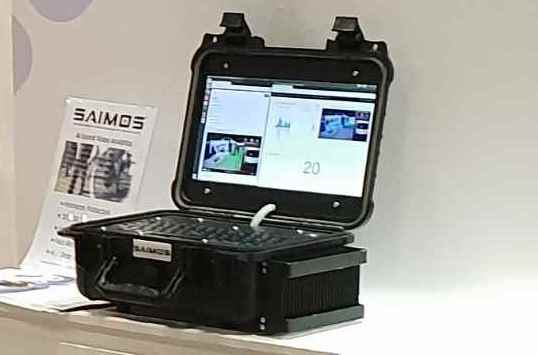
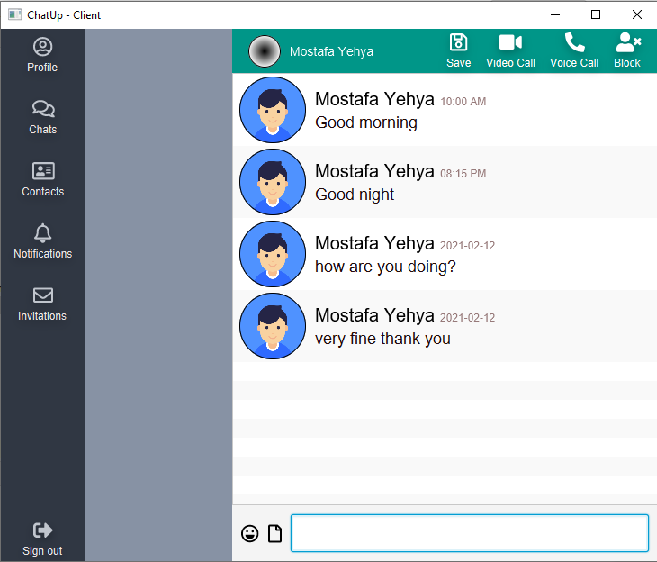

Mostafa Yehya

Software Engineer | Backend | Android
Growth-minded, self-driven software engineer equipped with +1 year of experience, eager to use Java and back-end skills to deliver impactful and clean software artifacts. Developed 2 Android apps. Built and wrote tests for +5 projects on Github, teached 2 oncampus courses
Featured Projects
Backend, Android apps and RESTful APIs.
Pet Clinic Website

A website built with spring boot to manage a pet clinic Store pets' records with veterinarians associated with them Wrote Unit tests and Integration tests for most of the app along with Circle CI pipeline integrated with the Github repository to run tests automatically
View project / case studyDelicious Recipes

Spring Web MVC project, that displays list of recipes
View project / case studyWatchbox app
When an alarm is triggered, the alarm message including the video sequence is sent via the SAIMOS® WatchBox App or by e-mail to the owner and/or an emergency call centre
View project / case studyChatup
Chatting Application that enables you to message multiple users at the same time, built with Java; JavaFX; RMI; JDBC; XML API and Love :)
View project / case studyWork Experience
Android developer
ONG-IT TechServ LLC.
February 2019 - March 2020
Achievements/Tasks
- Refactored the WatchBox app, security threats are detected and sent by an intelligent video analytics engine, when an alarm is triggered, the alarm message including the video sequence is sent to the app
- Implemented authentication with reactive based back-end
- Created custom bar-code scanner to enable users to connect securely to WatchBox devices
- Used reactive java to handle new alarms and syncing UI and local DB with the remote server, ROOM to store data locally, Kotlin-ktx for clean and concise code.
- Used Android Camera API with Milestone SDK to have an optimized stream of pushed camera frames into Milestone’s server.
Education
B.S.E in Computer Science & Engineering
Faculty of Electronic Engineering, Menofia University
2018
Courses
Algorithms; Programming Languages; Databases; Operating Systems; Computer Networks; Software Engineering; Computer Security